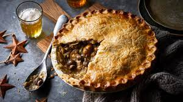

Mushroom & Chestnut Pie

Description
Here's a warming pie made with chestnuts, mushrooms and marsala wine. You could use white wine, red wine or vermouth if you don't have any marsala to hand.
Ingredients
For the Pastry
- 350g/12oz plain flour
- 200g/7oz butter, chilled
- pinch salt
- 1 free-range egg yolk
- chilled water
For the filling
- 50g/1¾oz butter
- 2 leeks, sliced
- 350g/12oz mushrooms (such as chestnut or button mushrooms)
- 2 garlic cloves, sliced
- large sprig thyme, leaves only
- 15g/½oz dried mushrooms (optional), soaked in 150ml/5fl oz freshly boiled water
- 50g/1¾oz plain flour
- 1 tsp Dijon mustard
- 100ml/3½fl oz marsala
- 200-300ml/7-10fl oz vegetable or chicken stock (amount depending on whether or not you are using dried mushrooms)
- 200g/7oz vacuum-packed chestnuts, left whole
Method
- To make the pastry, either put the plain flour and butter into a food processor with a generous pinch of salt and pulse until it resembles breadcrumbs, or rub it in by hand. Add all but a tablespoon of the egg yolk and just enough chilled water to bind it together. Shape into a ball, wrap in cling film, and chill in the fridge until you are ready to roll it. Reserve the remaining egg yolk for egg wash later.
- To make the filling, put the butter in a large saucepan and melt over a low heat. Add the leeks and cover. Fry for 5 minutes.
- Turn up the heat slightly and add the mushrooms. Cook for a further 4-5 minutes, then add the garlic and thyme. If using, drain the rehydrated mushrooms, reserving their soaking liquor, and roughly chop. Add to the saucepan.
- Add the flour and stir until you can see a roux has formed around the vegetables.
- Stir in the mustard, then add the marsala and stir until it is well incorporated. Gradually add the stock and the mushroom liquor, if using. (If not using the mushroom liquor, use the larger quantity of stock.) Bring the mixture to the boil, then turn down and simmer, continuing to stir, until it has thickened. Add the chestnuts, cover, and remove from the heat. Leave to cool.
- Preheat the oven to 190C/170C Fan/Gas 5.
- Divide the pastry into two pieces, one slightly bigger than the other. Roll out the larger piece of pastry and use it to line a pie dish. Add the cooled filling.
- Roll out the remaining piece of pastry and top the pie, wetting the edges with the egg wash, making sure they are well crimped together. Cut a couple of slits in the pie to let steam escape and brush with egg wash.
- Bake in the oven for around 40-45 minutes, or until the crust is golden brown. Serve in slices.
Homepage